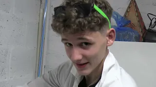
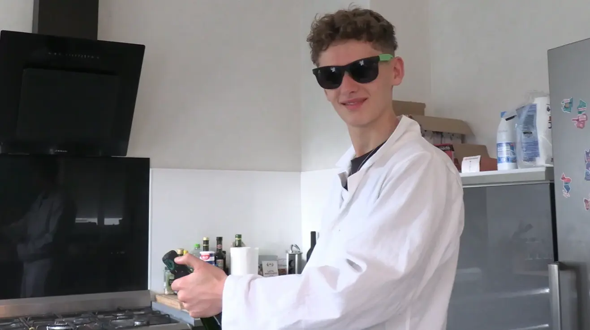
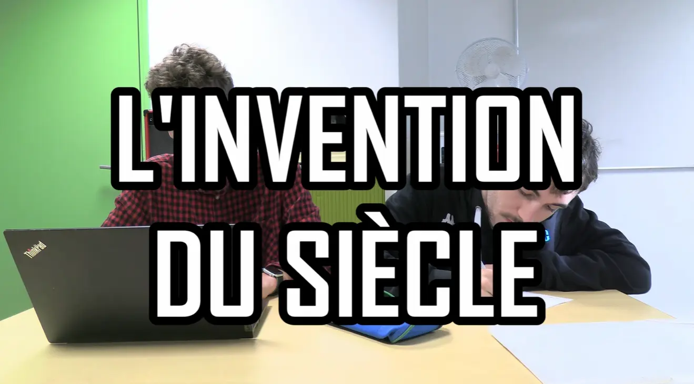
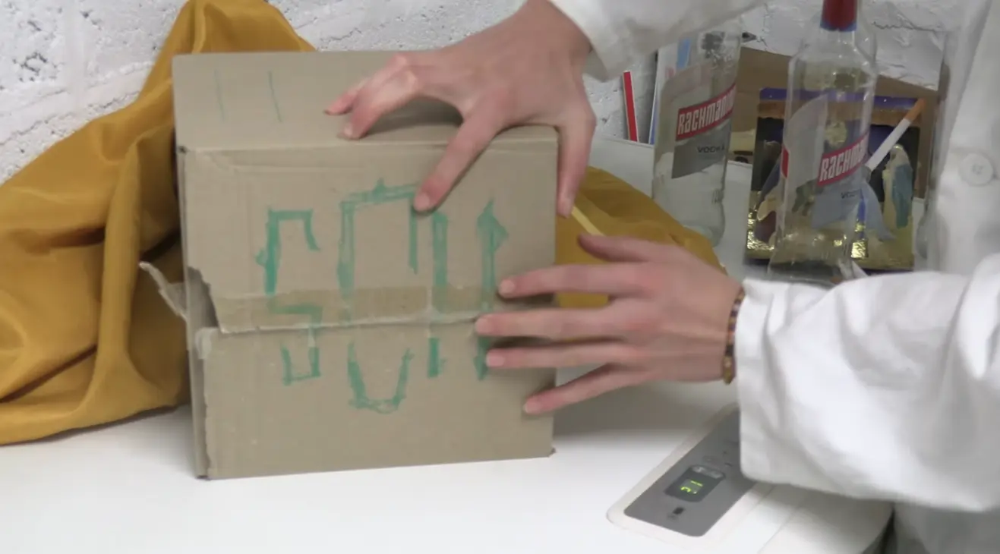
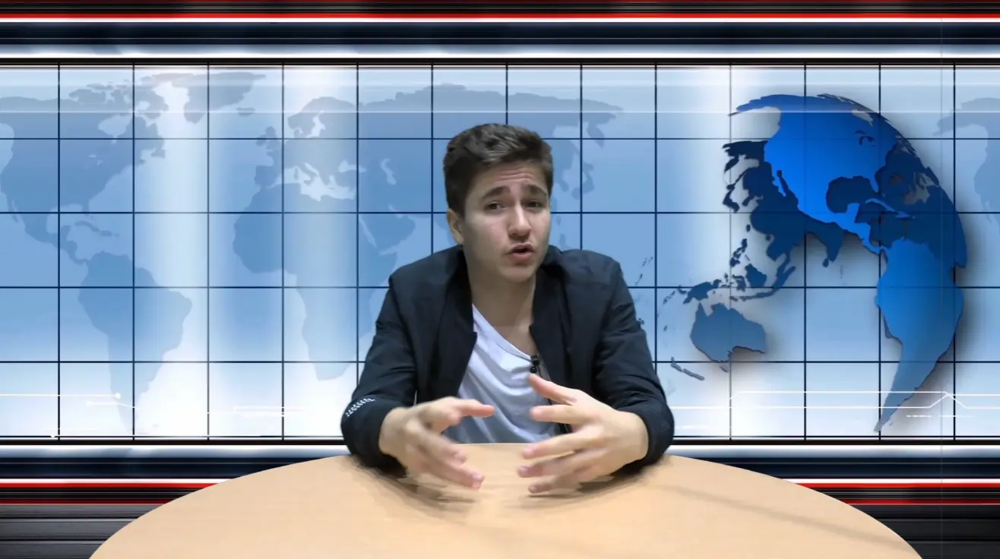

Projet vidéo reportage

Contexte
Pour le premier projet de début de première année de BUT MMI, nous devons réaliser une vidéo avec le matériel de l'IUT.
Objectif
Nous devions réaliser un "faux reportage" scientifique fictionnel, qui présente une invention imaginaire et révolutionnaire. Le reportage devait comporter une interview du scientifique qui réalise l'invention.
Développement
Pour réaliser le reportage, nous avions besoin du matériel de l'IUT. La principale difficulté que nous avons rencontré est la gestion de l'audio pendant l'enregistrement de l'interview, qui était dans une cave. En effet, mon collier tapait contre le micro-cravate pendant que je parlais pendant l'interview et ça a été compliqué à camoufler durant le montage. Ce genre d'erreur nous a en tout cas permis d'en apprendre plus et de ne plus en refaire de ce genre.
Images



